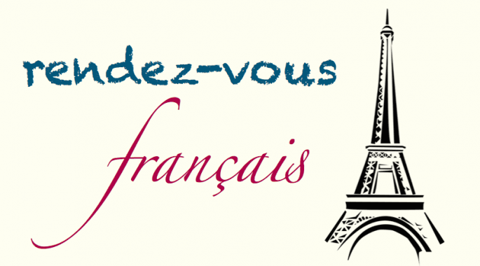

Mum & Baby French Classes
Through nursery rhymes and stories, your baby will discover the sounds of a new language while having a lot of fun. What makes our classes different from any others? You'll be learning French too. As a new mum, I know how you need to do things just for yourself, whether it's exercising, reading, or learning French - but it's not always easy to have someone mind your baby while you go to a class. Our classes are made so you can come and learn French, and bring your little one with you. The classes are baby-led: if your baby is hungry, tired or grumpy, don't worry at all, we've all been there - feel free to feed, stand up, walk, rock and bounce. It's not only a class for your baby, but for yourself too, and you definitely deserve it. Caroline is a French-qualified native teacher who has been teaching French to all ages in Ireland for 15 years. She is also mum to a little girl, with whom she started the mum & baby classes 3 years ago. Tuesdays, 10.30-11.30am. From birth to pre-crawlers. Location: Rendez-vous français, St Mary's Community Centre, Navan, Co. Meath.
View on Google Maps →